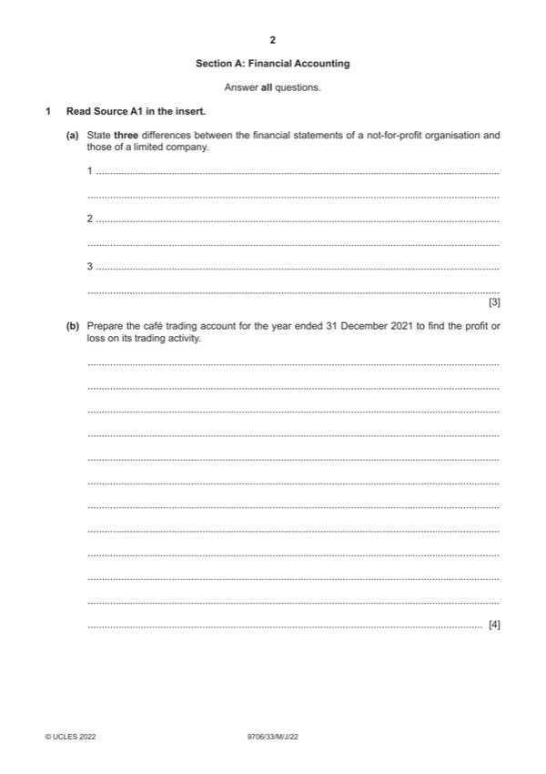

Question 1

Original paper page 2
Part 1(a) — solution
Answer: 3
3
Not-for-profit organisations Limited company
Income and expenditure account Income statement
Surplus / deficit Profit / loss
Accumulated fund Equity
Mark points
- Correct result: 3
Part 1 — solution
mark for each difference up to a maximum of three
Accept other valid answers.
Mark points
- Include the ideas shown in the solution above.
Part 1(b) — solution
- W1 Purchases $42 000 + $13 600 – $11 400 = $44 200
Mark points
- W1 Purchases $42 000 + $13 600 – $11 400 = $44 200
Part 1(c) — solution
Subscriptions account 4
$ $
Balance b/d 3 000 } Balance b/d 1 600 }(1) row
Income and Expenditure W1 90 000 (1) Receipts & payments 89 600 (1)OF
Balance c/d 2 200 } Balance c/d 4 000 }(1) row
Mark points
- Include the ideas shown in the solution above.
Part 1(d) — solution
Income and expenditure account for year ended 31 December 2021 6
$ $
Subscriptions 90 000) (1)OF
Profit from café 12 800) (1)OF
Rental of meeting room $2 100 + $4 600 6 700) (1)
109 500)
Club expenses 94 400
Depreciation of equipment ($78 000 + $14 000) 15% 13 800 (1)
Annual dinner $16 200 + $4 000 20 200 (1)
128 400)
Deficit / Excess of expenditure over income (18 900) (1)OF
Mark points
- Include the ideas shown in the solution above.
Part 1(e) — solution
Accrual / matching concept should be applied. (1). Life membership fee should be spread over a number of years. (1). The 3
number of years to be spread depends on the accounting policy of the club. (1)
Max 3
Accept other valid answers.
2022 Page 7 of 21
9706/33 Cambridge International AS & A Level – Mark Scheme May/June 2022
Mark points
- Include the ideas shown in the solution above.
Part 1(f) — solution
Café wages are saved leading to higher profit from sale of refreshment (1) 5
More space is released for club’s other activities (1)
Can offer snack and drinks 24/7 (1)
Should consider the cost of vending machines (1)
Welcoming atmosphere created by café staff (1)
Food and drinks offered are fresher (1)
Food and drinks are made to special needs, e.g. allergies (1)
Redundancy payment if café staff are fired (1)
Need for comparison between profitability and profit margins on vending machines and café. (1)
Mark points
- Include the ideas shown in the solution above.
Part 1 — solution
mark for identification of basic point for each of Adam and Mary and 1 further mark for development.
Accept other valid answers.
2022 Page 15 of 21
9706/33 Cambridge International AS & A Level – Mark Scheme May/June 2022
Mark points
- Include the ideas shown in the solution above.
Part 1 — solution
mark for each difference up to a maximum of three
Mark points
- Include the ideas shown in the solution above.
Part 1 — solution
mark for decision
Accept other valid answers.
2022 Page 19 of 21
9706/33 Cambridge International AS & A Level – Mark Scheme May/June 2022
Mark points
- Include the ideas shown in the solution above.
Part 1 — solution
mark for decision.
2022 Page 21 of 21
Mark points
- Include the ideas shown in the solution above.